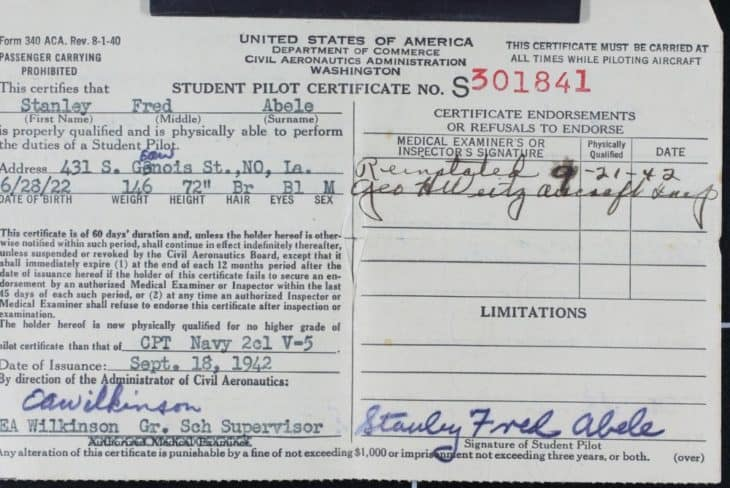

-Kinds of pilot license

- Private Pilot License(PPL)
- Commercial Pilot License(CPL)
- Airline Tranport Pilot License(ATP)

2. Commercial Pilot License.
- A commercial pilot may be compensated for flying.
- Training for the certificate focuses on a better understanding of aircraft systems and a higher standard of airmanship.
The Commercial Pilot Certificate itself does not allow a pilot to fly in instrument meteorological conditions (IMC), and commercial pilots without an instrument rating are restricted to daytime flight within 50 NM when flying for hire.
A commercial airplane pilot must be able to operate a complex airplane, as a specific number of hours of complex (or turbine-powered) aircraft time are among the prerequisites, and at least a portion of the practical examination is performed in a complex aircraft. A complex aircraft must have retractable landing gear, movable flaps, and a controllable-pitch propeller. See 14 CFR part 61, section 61.31(e) for additional information.